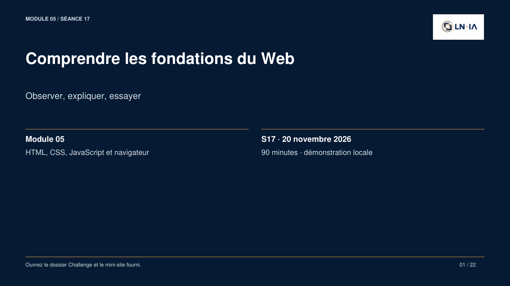
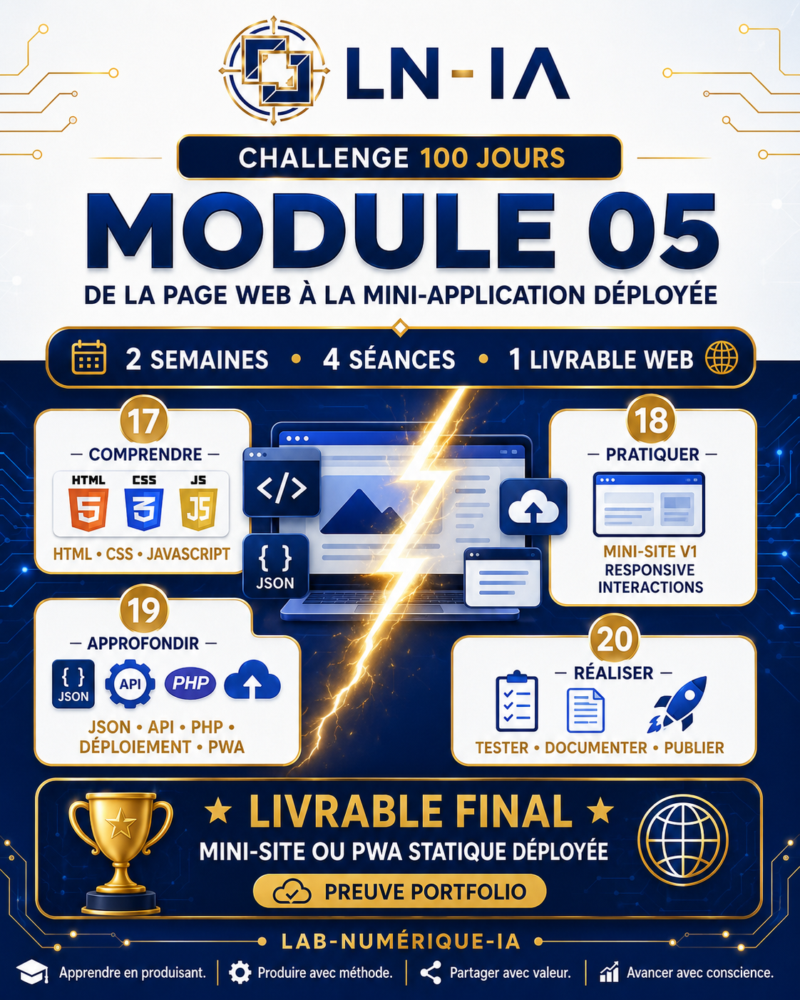
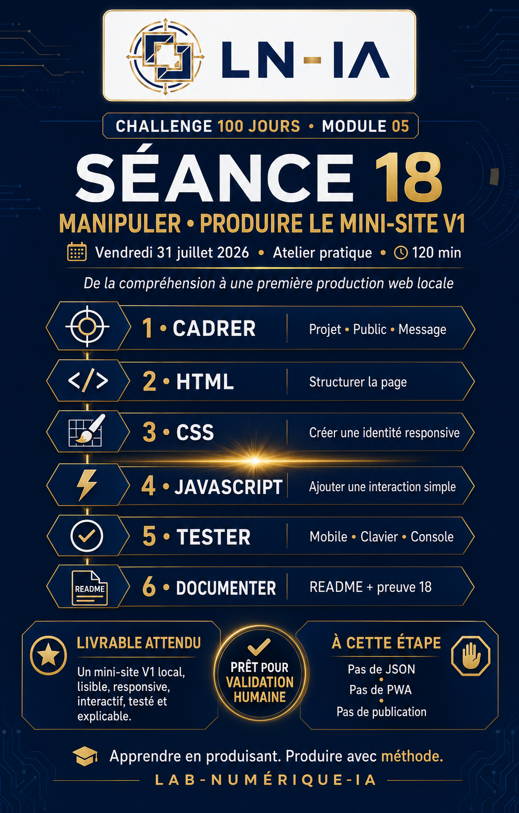
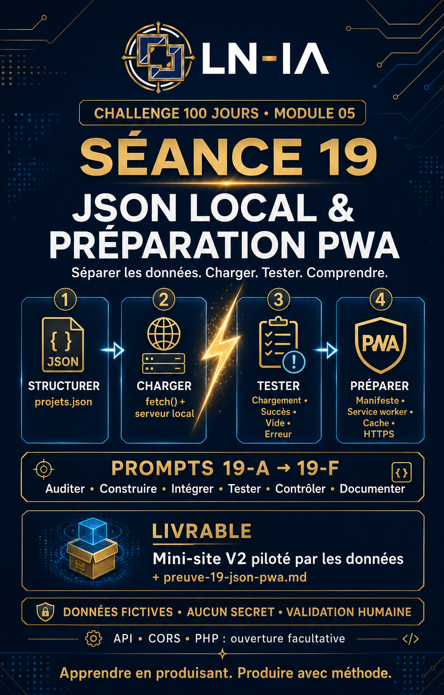

Comprendre
Les rôles du Web et le carnet d’essai
ATELIER LN-IA · SÉANCE 17
Observez le mini-site fourni. Reliez le contenu, le style et les interactions aux fichiers, puis gardez vos essais dans votre dossier Challenge.
JavaScript fait réagir. Le navigateur assemble.
Explorer le support fourniUn exemple commun, vos propres observations.QUESTION D’OUVERTURE
Quels éléments relèvent de HTML, de CSS et de JavaScript ? Essayez la navigation et le bouton avant de lire le code.
Suivre la méthode d’observationcarnet-essai-S17.md
Une prédiction, des observations, une explication et une question pour S18.
Ouvrir mon carnet d’essaiSEMAINES 09 ET 10
Les rôles du Web et le carnet d’essai
Le contenu et ses appuis
La page V1 et sa cible
La V2 et son essai lecteur
PROJECTION COLLECTIVE
22 vues pour comprendre le support fourni, observer les interactions et conserver une trace. Chaque vue possède une note pour le formateur.
Flèches pour avancer, Échap pour revenir à l’atelier.

Les affiches originales présentent le module, S17 et la suite du parcours. Leurs éventuelles dates d’été ne remplacent pas le calendrier d’automne 2026. Le PDF et le PowerPoint contiennent ces neuf affiches en annexe, après les 22 vues.

Vue d’ensemble du parcours, en appui à la vue 4.
Voir l’affiche en grand
Repère d’ouverture pour observer HTML, CSS et JavaScript.
Voir l’affiche en grand
Support de cadrage pour préparer la suite après les essais S17.
Voir l’affiche en grand
Transition vers la suite. La date d’été imprimée appartient au support original.
Voir l’affiche en grand
Perspective pour la suite du module, au-delà des objectifs de S17.
Voir l’affiche en grandPremier repère pour les essais et les preuves du livrable final.
Voir l’affiche en grand
Variante de l’affiche S20, conservée pour comparaison et discussion.
Voir l’affiche en grand
Horizon du parcours. Les résultats et la validation restent à établir.
Voir l’affiche en grand
Perspective de production avancée, au-delà du programme de S17.
Voir l’affiche en grandOBSERVER, EXPLIQUER, ESSAYER
Le résultat visible sert de point de départ. Reliez ensuite chaque observation au fichier correspondant.
Retrouver l’accueil, le mini-site et le carnet.
Décrire le contenu, le style et les réactions sans supposer leur origine.
Relier un titre à HTML, une disposition à CSS et le bouton à JavaScript.
Tester souris, clavier et largeur mobile.
Montrer le fichier qui appuie votre explication.
Exporter puis rouvrir le carnet et préparer une question pour S18.
| Minutes | Phase | Geste du candidat | Observation |
|---|---|---|---|
| 00–08 | Ouvrir | Retrouver le support et le carnet. | Les deux pièces sont accessibles depuis l’accueil. |
| 08–20 | Repérer | Associer un titre, une couleur et une interaction à un fichier. | Le candidat explique un exemple par technologie. |
| 20–35 | Observer | Décrire l’état avant et après et ouvrir la console. | Prédiction et observation sont distinguées. |
| 35–65 | Essayer | Tester souris, clavier et largeur mobile ; noter ses observations. | Une observation réelle et une explication sont consignées. |
| 65–80 | Expliquer | Retrouver l’interaction et le carnet puis proposer une amélioration. | Le chemin et les hésitations sont relevés. |
| 80–90 | Conserver | Conserver carnet et preuve, préparer une question pour S18. | La trace est retrouvable depuis le portfolio. |
LE MINI-SITE FOURNI
Le support explique HTML, CSS, JavaScript, le navigateur et local/public. Vos essais documentent votre compréhension.
Changez une seule valeur à la fois et observez son effet.
Un titre HTML, une couleur CSS et un bouton JavaScript.
JavaScript vient de rendre ce paragraphe visible.
HTML organise, CSS présente, JavaScript fait réagir.
CARNET D’ESSAI S17
Chargez le contexte du mini-site fourni, puis notez vos propres observations. Le plan de page sert à préparer S18.
PRODUIRE APRÈS L’ATELIER
Chaque prompt précise son entrée, sa limite, sa sortie et son contrôle. Vous gardez votre décision dans le dossier personnel.
Comprendre le support
Ouvrez le mini-site fourni depuis le dossier Challenge. Repérez un titre HTML, une disposition CSS et le bouton JavaScript. Prédisez puis testez le bouton. Notez ce que vous avez réellement observé, expliquez local et publié, exportez le carnet et préparez une question pour S18.
Comprendre le support
Aidez-moi à comprendre ce mini-site : [extraits HTML, CSS, JavaScript]. Expliquez le rôle de chaque fichier avec un élément visible. Proposez un essai court que je peux réaliser. Ne supposez aucun résultat d’essai et n’ajoutez aucun projet inventé.
Comprendre le support
Expliquez cet extrait HTML avec des mots simples : [extrait]. Montrez quel lien rejoint quelle section. Je vérifierai les identifiants et le parcours dans le navigateur.
Comprendre le support
Expliquez cette règle CSS : [règle]. Que devrait-elle changer à l’écran ? Proposez une seule modification réversible. Je comparerai avant et après.
Comprendre le support
Expliquez ce code JavaScript : [extrait]. Distinguez l’événement, la règle et les propriétés modifiées. Je testerai les deux états et je noterai mon observation réelle.
Comprendre le support
Voici le menu et une difficulté réellement observée : [extrait et observation]. Proposez une amélioration limitée : libellé, accès direct ou retour. Expliquez son effet attendu. Je déciderai et referai le même essai au clavier et sur mobile.
RÉVISION ACTIVE
Répondez avant de retourner la carte. Donnez ensuite un exemple issu de votre propre dossier.
HUIT SITUATIONS
Choisissez une réponse par situation. Après correction, les trois choix reçoivent une explication.
REVUE DES PIÈCES
Ouvrez les fichiers pendant la revue. Le pilote consigne son observation, son nom et sa décision datée.
TRACES DE PRODUCTION
Le carnet et la preuve conservent vos observations et les explications à reprendre en S18.
mini-site-demonstration/index.html
carnet-essai-S17.md
preuve-S17.md
index-portfolio.md
relais-S18.md
Ajoutez l’entrée à votre index existant. Elle utilise des chemins relatifs à 06-PORTFOLIO.
Les rôles du Web et le carnet d’essai
Le contenu et ses appuis
La page V1 et sa cible
La V2 et son essai lecteur
LUNDI 23 NOVEMBRE · S18
Reprenez votre carnet et votre question. Choisissez le sujet de votre future page et préparez son contenu à partir d’une source vérifiée.
04-WEB/contenu-page-projet.mdSUPPORTS ET RÉFÉRENCES
Les fichiers du pack s’ouvrent depuis le mini-site et restent disponibles après extraction.
22 diapositives modifiables avec notes du présentateur.
Les mêmes 22 vues pour la projection ou la lecture.
Six phases, 90 minutes, gestes et relances.
Une note orale et un geste pour chaque vue.
S17, vendredi 20 novembre 2026.
Modèles du plan, preuve, index, relais et fiche imprimable.
Rôles du Web, observation, navigation et décision.
À compléter dans votre dossier personnel.
Référence, prédiction, observation et motif.
Ligne S17 et chemins des pièces du module.
Plan et source à rouvrir le lundi 23 novembre.
Prompt maître, consignes après replay et quatre missions.
HTML, CSS, JavaScript, Bootstrap, Vite et métadonnées.
12 cartes et 24 explications pour les huit situations.
Le cadre de production des séances S17 à S20.
Retrouver le message corrigé et la clôture du module 04.
Modèle provenant du dépôt S16, pour comparer les champs.
Documentation officielle d’intégration.
Configuration et utilisation de la sortie dist.
Titres, contenu lisible et liens descriptifs.
Aucun support ne correspond à cette recherche.